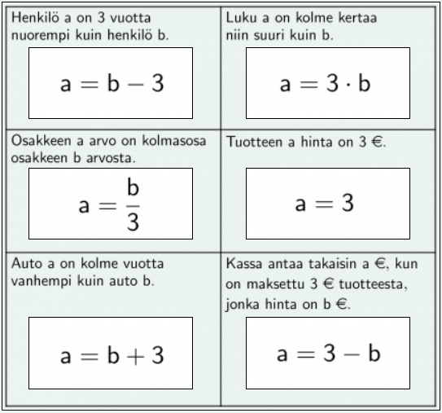
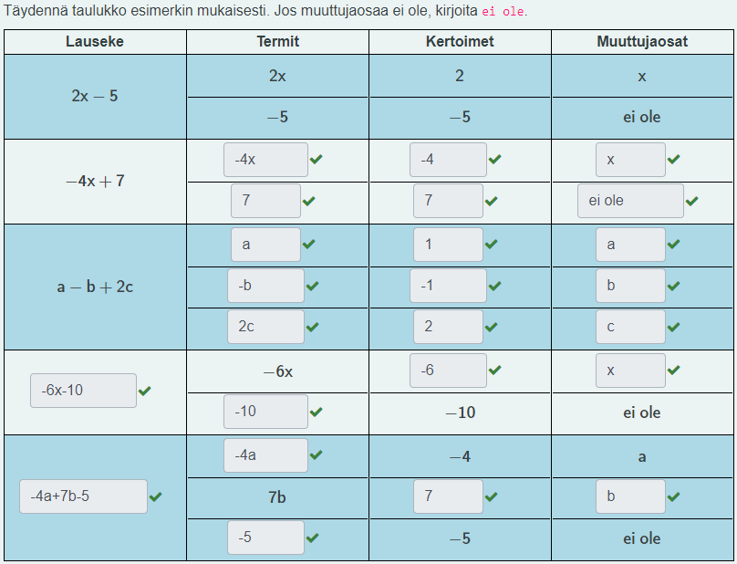

MA7 Jakso 3: Malliratkaisut
1. Muuttujalauseke
Tehtävä 1.1: Käsitteet tutuiksi
Kysymys 1 (Vedä kohde kuvan päälle)

Tehtävä 1.4: Sanallinen tehtävä (keskinopeus)
Keskinopeus \(\mathsf{v}\) saadaan jakamalla matka \(\mathsf{s}\) ajalla \(\mathsf{t}\).
\(\mathsf{v = \dfrac{s}{t}}\)
a) Laske keskinopeus, kun matka \(\mathsf{s = \text{20 km}}\) ja aika \(\mathsf{t=\text{2 h}}\).
\(\mathsf{v = \dfrac{s}{t} = \dfrac{\text{20 km}}{\text{2 h}} = 10\dfrac{km}{h}}\)
b) Laske keskinopeus, kun matka \(\mathsf{s = \text{60 km}} \) ja aika \(\mathsf{t=\text{4 h}}\).
\(\mathsf{v = \dfrac{s}{t} = \dfrac{\text{60 km}}{\text{4 h}} = 15\dfrac{km}{h}}\)
Tehtävä 1.5: Muuttujalausekkeita
Kysymys 1 (Vedä kohde kuvan päälle)
Tehtävä 1.8: Sanallinen tehtävä (liittymämyyjä)
Saara myy kesätyönään puhelinliittymiä. Saara saa palkkaa 80 euroa päivältä ja 5 euroa jokaista myytyä liittymää kohti.
a) Kirjoita muuttujalauseke Saaran päiväpalkasta, kun hän myy x liittymää päivässä.
\(\mathsf{5x + 80}\)
b) Laske lausekkeen avulla, kuinka paljon Saara tienaa yhden päivän aikana, kun hän myy 15 liittymää päivän aikana.
\(\mathsf{x = 15}\)
\(\mathsf{5x + 80 = 5 \cdot 15 + 80 = 75 + 80 = 155}\)
Vastaus: Saara tienaa yhden päivän aikana 155 euroa.
c) Laske, kuinka paljon Saara tällöin tienaa kuukauden (20 työpäivää) aikana.
\(\mathsf{20 \cdot 155 = 3100}\)
Vastaus: Saara tienaa kuukaudessa 3100 euroa.
2. Termi
Tehtävä 2.2: Termin kerroin ja muuttujaosa
Kysymys 1 (Vedä kohde kuvan päälle)

Kysymys 2 (Vedä kohde kuvan päälle)

Tehtävä 2.3: Muuttujalausekkeen termit
Kysymys 1 (Aukkotehtävät)
Lausekkeessa on 2 termiä. Lausekkeen ensimmäisen termin muuttujaosa on x, ja lausekkeessa esiintyy vakiotermi 5.
Kysymys 2 (Aukkotehtävät)
Lausekkeessa on 3 termiä.
Luettele lausekkeen termit: \(\mathsf{-2x}\), \(\mathsf{3y}\) ja \(\mathsf{-6}\)
Kysymys 3 (Aukkotehtävät)
Lausekkeessa on 3 termiä.
Lausekkeen ensimmäisen termin kerroin on 1.
Lausekkeen viimeisen termin kerroin on -1.
Jos \(\mathsf{a = 3}\), \(\mathsf{b = 7}\) ja \(\mathsf{c = 8}\) saadaan lausekkeen arvoksi 2.
Tehtävä 2.5: Termin kerroin ja muuttujaosa
Kysymys 1 (Vedä kohde kuvan päälle)

Tehtävä 2.6: Muuttujalausekkeen termit
Kysymys 1 (Vedä kohde kuvan päälle)
Tehtävä 2.7: Sanallisia tehtäviä (Piirin lauseke)
Muodosta tasokuvion piirin lauseke, ja laske piirin pituus, kun x = 3 ja y = 2.
a)
Muuttujalauseke: \(\mathsf{3x}\)
\(\mathsf{p = 3x = 3 \cdot 3 = 9}\)
b)
Muuttujalauseke: \(\mathsf{4x}\)
\(\mathsf{p = 4x = 4 \cdot 3 = 12}\)
c)
Muuttujalauseke: \(\mathsf{2x+y}\)
\(\mathsf{p = 2x+y = 2 \cdot 3 + 2 = 8}\)
d)
Muuttujalauseke: \(\mathsf{2x+2y}\)
\(\mathsf{p = 2x+2y = 2 \cdot 3 + 2 \cdot 2 = 10}\)
3. Termien yhteen- ja vähennyslasku
Tehtävä 3.1: Samanmuotoiset termit
Kysymys 1 (Raahaa merkki kuvan päälle)

Tehtävä 3.3: Erimuotoisten termien järjestys
Kysymys 1 (Ordering)
\(\mathsf{+5a-8b+4c}\)
Kysymys 2 (Ordering)
\(\mathsf{-x+8y-2z}\)
Kysymys 3 (Ordering)
\(\mathsf{+5a-3b+15c+6}\)
Kysymys 4 (Ordering)
\(\mathsf{-9x+3y-z-1}\)
Tehtävä 3.6: Termien sievennyksiä vihkoon
Sievennä.
a) \(\mathsf{4x + 5x = 9x}\)
b) \(\mathsf{8a - 12a = -4a}\)
c) \(\mathsf{-4x + x - 5x = -8x}\)
d) \(\mathsf{9a + 4a + 6b - b = 13a + 5b}\)
e) \(\mathsf{-x + x - 1 - 1 = -2}\)
f) \(\mathsf{5a - b + 5 - 6a + 2b + 16 = -a + b + 21}\)
4. Termien kerto- ja jakolasku
Tehtävä 4.4: Termien sievennyksiä vihkoon
Sievennä.
a) \(\mathsf{7 \cdot 5x = 35x}\)
b) \(\mathsf{-12a \cdot 2 = -24a}\)
c) \(\mathsf{\dfrac{63x}{9} = 7x}\)
d) \(\mathsf{\dfrac{-24k}{8} = -3k}\)
e) \(\mathsf{4 \cdot 3a - 5 \cdot 4a = 12a - 20a = -8a}\)
f) \(\mathsf{\dfrac{6 \cdot 3x}{2} = \dfrac{18x}{2} = 9x}\)
Tehtävä 4.8: Sievennä ja laske
Sievennä muuttujalauseke, ja laske sen arvo, kun muuttuja \(\mathsf{x = -1}\).
a)
\(\begin{align}\mathsf{4 \cdot 4x - 5 \cdot 3x} &= \mathsf{16x - 15x}\\ &= \mathsf{x}\\ &= \mathsf{-1}\end{align}\)
b)
\(\begin{align}\mathsf{3x \cdot 2 + 7} &= \mathsf{6x + 7}\\ &= \mathsf{6 \cdot (-1) + 7}\\ &= \mathsf{-6+7}\\ &= \mathsf{1}\end{align}\)
c)
\(\begin{align}\mathsf{-x -8x -26 + 9x +8} &= \mathsf{-18}\end{align}\)
d)
\(\begin{align}\mathsf{\dfrac{55x - 19x}{-2 \cdot 3}} &= \mathsf{\dfrac{36x}{-6}}\\ &= \mathsf{-6x}\\ &= \mathsf{-6 \cdot (-1)}\\ &= \mathsf{6}\end{align}\)
Tehtävä 4.9: Sanallinen tehtävä (Muodosta lauseke ja laske)
Muodosta annetusta tilanteesta muuttujalauseke, ja laske lausekkeen arvo annetuilla muuttujien arvoilla.
a) Lämpötilan Kelvin-asteet \(\mathsf{k}\) saadaan lisäämällä celsiusasteisiin \c luku 273. Laske lämpötila 25 °C kelvineinä.
Muuttujalauseke
\(\mathsf{k = c + 273}\)
Sijoitetaan muuttujalausekkeeseen \(\mathsf{c = 25}\)
\(\mathsf{k = c + 273 = 25 + 273 = 298}\)
Vastaus: Lämpötila on 298 kelviniä.
b) Kuljettu matka s on keskinopeuden v ja ajan t tulo. Laske kuljettu matka, kun nopeus v = 45 km/h ja aika t = 1,2 tuntia.
Muuttujalauseke
\(\mathsf{s = vt}\)
Sijoitetaan muuttujalausekkeeseen \(\mathsf{v = 45}\) ja \(\mathsf{t = 1{,}2}\)
\(\mathsf{s = vt = 45 \cdot 1{,}2 = 54}\)
Vastaus: Kuljettu matka on 54 kilometriä.
c) Taksimatkan hinta h koostuu 5 euron kiinteästä maksusta sekä 1,50 euron maksusta jokaiselta kuljetulta kilometriltä. Merkitse kuljettuja kilometrejä muuttujalla x. Laske taksimatkan hinta, kun kuljetaan taksilla Viljakkalasta 40 km matka Särkänniemeen.
Muuttujalauseke
\(\mathsf{h = 1{,}5x + 5}\)
Sijoitetaan muuttujalausekkeeseen \(\mathsf{x = 40}\)
\(\mathsf{h = 1{,}5x + 5 = 1{,}5 \cdot 40 + 5 = 65}\)
Vastaus: Hinta on 65 euroa.
d) Tuulian Instagram-tilillä on 4 356 seuraajaa (f), ja joka päivä tulee 16 seuraajaa lisää. Laske seuraajien määrä vuoden kuluttua. Merkitse päivien lukumäärää muuttujalla d.
Muuttujalauseke
\(\mathsf{f = 16d + 4\;356}\)
Sijoitetaan muuttujalausekkeeseen \(\mathsf{d = 365}\)
\(\mathsf{f = 16d + 4\;356 = 16 \cdot 365 + 4\;356 = 10\;196}\)
Vastaus: Vuoden kuluttua Tuulialla on 10 196 seuraajaa.
Tehtävä 4.10: Sanallisia tehtäviä (Jääkiekko-ottelun liput)
Jääkiekko-ottelun liput maksavat aikuisilta 15 euroa ja lapsilta 10 euroa.
a) Seurueessa on x aikuista ja y lasta. Muodosta muuttujalauseke jääkiekko-ottelun lippujen kokonaishinnasta.
\(\mathsf{h = 15x+10y}\)
b) Laske lausekkeen avulla, kuinka paljon maksaa 8 aikuisen ja 12 lapsen käynti jääkiekko-ottelussa.
Sijoitetaan muuttujalausekkeeseen \(\mathsf{x = 8}\) ja \(\mathsf{y = 12}\).
\(\mathsf{h = 15x+10y = 15 \cdot 8 + 10 \cdot 12 = 120 + 120 = 240}\)
Vastaus: Liput maksavat yhteensä 240 euroa.
c) Ottelussa järjestetään joululoman kunniaksi perhepeli, jossa myydään tavallisten lippujen lisäksi perhelippua, joka maksaa 45 euroa. Perhelipulla pääsee peliin enimillään kaksi aikuista ja kolme lasta. Kuinka paljon perhelipulla voi parhaimmillaan säästää?
Lasketaan lippujen hinta ilman tarjousta sijoittamalla muuttujalausekkeeseen \(\mathsf{x = 2}\) ja \(\mathsf{y = 3}\).
\(\mathsf{h = 15x+10y = 15 \cdot 2 + 10 \cdot 3 = 30 + 30 = 60}\)
Lasketaan lippujen hinnan ja perhelipun hinnan erotus.
\(\mathsf{\text{60 €} - \text{45 €} = \text{15 €}}\)
Vastaus: Perhelipulla voi säästää 15 euroa.
Tehtävä 4.11: Sievennä ja laske
Sievennä muuttujalauseke, ja laske sen arvo, kun muuttuja \(\mathsf{x = -2}\).
a)
\(\begin{align}\mathsf{-8 \cdot 3x + 19x} &= \mathsf{-24x + 19x}\\ &= \mathsf{-5x}\\ &= \mathsf{-5 \cdot (-2)}\\ &= \mathsf{10}\end{align}\)
b)
\(\begin{align}\mathsf{6 + 27x + 13x\cdot(-2) - 6} &= \mathsf{6 + 27x -26x - 6}\\ &= \mathsf{x}\\ &= \mathsf{-2}\end{align}\)
c)
\(\begin{align}\mathsf{\dfrac{x + 21 - 5 - 7x}{-x+2+x}} &= \mathsf{\dfrac{-6x+16}{2}}\\ &= \mathsf{-3x+8}\\ &= \mathsf{-3 \cdot (-2) + 8}\\ &= \mathsf{6+8}\\ &= \mathsf{14}\end{align}\)
d)
\(\begin{align}\mathsf{\dfrac{-3x\cdot 6}{-8-(-17)}} &= \mathsf{\dfrac{-18x}{-8+17}}\\ &= \mathsf{\dfrac{-18x}{9}}\\ &= \mathsf{-2x}\\ &= \mathsf{-2 \cdot (-2)}\\ &= \mathsf{4}\end{align}\)
Tehtävä 4.13: Luvun ja muuttujalausekkeen tulo
Sievennä.
a) \(\mathsf{\quad 2 \cdot (x+1) = 2x + 2}\)
b) \(\mathsf{\quad -1 \cdot (2x+3) = -2x - 3}\)
c) \(\mathsf{\quad (3x - 8) \cdot 4 = 12x - 32}\)
d) \(\mathsf{\quad (7x - 2) \cdot (-3) = -21x + 6}\)
e) \(\mathsf{\quad 5 \cdot (-x + 3) = -5x + 15}\)
f) \(\mathsf{\quad -10 \cdot (-6x-9) = 60x + 90}\)
5. Lukujonot
Tehtävä 5.1: Aritmeettisen ja geometrisen lukujonon tunnistaminen
Kysymys 1 (Aukkotehtävä)
Lukujono on järjestykseen asetettujen lukujen luettelo. Yksittäistä lukua kutsutaan lukujonon jäseneksi. Jokaisella jäsenellä on oma järjestysnumeronsa, jota merkitään usein muuttujalla n.
Lukujono voi olla täysin satunnainen, mutta yleensä meitä kiinnostavat vain jonkin säännön mukaan muodostetut lukujonot. Sääntö voidaan antaa joko sanallisesti tai lausekkeena.
Aritmeettinen lukujono on sellainen lukujono, jonka seuraava jäsen saadaan lisäämällä tai vähentämällä edelliseen jäseneen aina sama luku.
Geometrinen lukujono on sellainen lukujono, jonka seuraava jäsen saadaan kertomalla tai jakamalla edellinen jäsen aina samalla luvulla.
Kysymys 2 (Aukkotehtävä)
a) Tarkastellaan lukujonoa \(\mathsf{1, 2, 3, ...}\)
Lukujonon seuraava jäsen on: 4.
Lukujono on geometrinen.
b) Tarkastellaan lukujonoa \(\mathsf{1, 2, 4, 8, ...}\)
Lukujonon seuraava jäsen on: 16.
Lukujono on geometrinen.
c) Tarkastellaan lukujonoa \(\mathsf{8, 6, 4, ...}\)
Lukujonon seuraava jäsen on: 2.
Lukujono on aritmeettinen.
d) Tarkastellaan lukujonoa \(\mathsf{10, 15, 20...}\)
Lukujonon seuraava jäsen on: 5.
Lukujono on aritmeettinen.
e) Tarkastellaan lukujonoa \(\mathsf{1000, 100, 10...}\)
Lukujonon seuraava jäsen on: 1.
Lukujono on geometrinen.
Tehtävä 5.2: Aritmeettisen lukujonon jatkaminen ja sääntö
Kysymys 1 (Aukkotehtävä)
Kirjoita lukujonon neljä seuraavaa jäsentä, ja kirjoita lukujonon sääntö.
\(\mathsf{2, 4, 6, 8,}\) 10, 12, 14, 16, ...
Sääntö: Lukujonon ensimmäinen jäsen on 2, ja seuraava jäsen saadaan lisäämällä edelliseen jäseneen luku 2.
Kysymys 2 (Aukkotehtävä)
Kirjoita lukujonon neljä seuraavaa jäsentä, ja kirjoita lukujonon sääntö.
\(\mathsf{25, 22, 19, 16,}\) 13, 10, 7, 4, ...
Sääntö: Lukujonon ensimmäinen jäsen on 25, ja seuraava jäsen saadaan vähentämällä edellisestä jäsenestä luku 3.
Kysymys 3 (Aukkotehtävä)
Kirjoita lukujonon neljä seuraavaa jäsentä, ja kirjoita lukujonon sääntö.
\(\mathsf{5, 3, 1, -1,}\) -3, -5, -7, -9, ...
Sääntö: Lukujonon ensimmäinen jäsen on 5, ja seuraava jäsen saadaan vähentämällä edellisestä jäsenestä luku 2.
Kysymys 4 (Aukkotehtävä)
Kirjoita lukujonon neljä seuraavaa jäsentä, ja kirjoita lukujonon sääntö. Kun lukujono koostuu desimaaliluvuista, käytetään lukujen erottamiseen pilkun ( , ) sijasta puolipistettä ( ; ).
\(\mathsf{\text{1,5}; \text{ 1,6}; \text{ 1,7}; \text{ 1,8};}\) 1,9; 2,0; 2,1; 2,2; ...
Sääntö: Lukujonon ensimmäinen jäsen on 1,5, ja seuraava jäsen saadaan lisäämällä edelliseen jäseneen luku 0,1.
Tehtävä 5.3: Geometrisen lukujonon jatkaminen ja sääntö
Kysymys 1 (Aukkotehtävä)
Kirjoita lukujonon kaksi seuraavaa jäsentä, ja kirjoita lukujonon sääntö.
\(\mathsf{1, 2, 4, 8,}\) 16, 32, ...
Sääntö: Lukujonon ensimmäinen jäsen on 1, ja seuraava jäsen saadaan kertomalla edellinen jäsen luvulla 2.
Kysymys 2 (Aukkotehtävä)
Kirjoita lukujonon kaksi seuraavaa jäsentä, ja kirjoita lukujonon sääntö.
\(\mathsf{1, 10, 100,}\) 1000, 10000, ...
Sääntö: Lukujonon ensimmäinen jäsen on 1, ja seuraava jäsen saadaan kertomalla edellinen jäsen luvulla 10.
Kysymys 3 (Aukkotehtävä)
Kirjoita lukujonon kaksi seuraavaa jäsentä, ja kirjoita lukujonon sääntö.
\(\mathsf{256, 128, 64, 32}\) 16, 8, ...
Sääntö: Lukujonon ensimmäinen jäsen on 256, ja seuraava jäsen saadaan jakamalla edellinen jäsen luvulla 2.
Tehtävä 5.6: Kuviojono
Kuviojono 1

Kuviojono 2

Kuviojono 3

Kuviojono 4

Pisteiden lukumäärät
| Kuviojono 1 | Kuviojono 2 | Kuviojono 3 | Kuviojono 4 | |||||||
|---|---|---|---|---|---|---|---|---|---|---|
| Jäsen | Pisteet | Jäsen | Pisteet | Jäsen | Pisteet | Jäsen | Pisteet | |||
| 1 | 1 | 1 | 1 | 1 | 1 | 1 | 1 | |||
| 2 | 3 | 2 | 5 | 2 | 4 | 2 | 3 | |||
| 3 | 5 | 3 | 9 | 3 | 9 | 3 | 6 | |||
| 4 | 7 | 4 | 13 | 4 | 16 | 4 | 10 | |||
| 5 | 9 | 5 | 17 | 5 | 25 | 5 | 15 | |||
Tehtävä 5.10: Aritmeettisen lukujonon säännön muodostaminen
Tarkastellaan aritmeettista lukujonoa, jonka kolme ensimmäistä jäsentä ovat \(\mathsf{2,5,8,...}\)
a) Kirjoita lukujonon sääntö ilmoittamalla jonon ensimmäinen jäsen sekä laskutoimitus, jolla seuraava jäsen lasketaan.
Lukujonon ensimmäinen jäsen on 2 ja seuraava jäsen saadaan lisäämällä edelliseen jäseneen luku 3.
b) Kirjoita lukujonon sääntö ilmoittamalla laskutoimitus, jolla voidaan laskea lukujonon järjestykseltään \(\mathsf{n}\):s jäsen.
\(\mathsf{3n-1}\)
c) Laske lukujonon 10. jäsen.
\(\mathsf{a_{10} = 3 \cdot 10 - 1 = 30 - 1 = 29}\)
d) Laske lukujonon 115. jäsen.
\(\mathsf{a_{115} = 3 \cdot 115 - 1 = 345 - 1 = 344}\)
Tehtävä 5.11: Lukujonon jatkaminen
Kirjoita lukujonon neljä seuraavaa jäsentä.
a) \(\mathsf{55, 46, 37, 28, 19, 10, 1, ...}\)
b) \(\mathsf{1, \dfrac{1}{2}, \dfrac{1}{3}, \dfrac{1}{4}, \dfrac{1}{5}, \dfrac{1}{6}, \dfrac{1}{7},...}\)
c) \(\mathsf{\text{1,5}; \text{1,6}; \text{1,7}; \text{1,8}; \text{1,9}; \text{2,0}; \text{2,1}; ...}\)
d) \(\mathsf{\text{0,53}; \text{0,42}; \text{0,31}; \text{0,20}; \text{0,09}; -0{,}02; -0{,}13; ...}\)
e) \(\mathsf{1, -2, 4, -8, 16, -32, 64, -128,...}\)
f) \(\mathsf{\text{0,04}; \text{0,2}; 1; 5; 25; 125; 625;...}\)